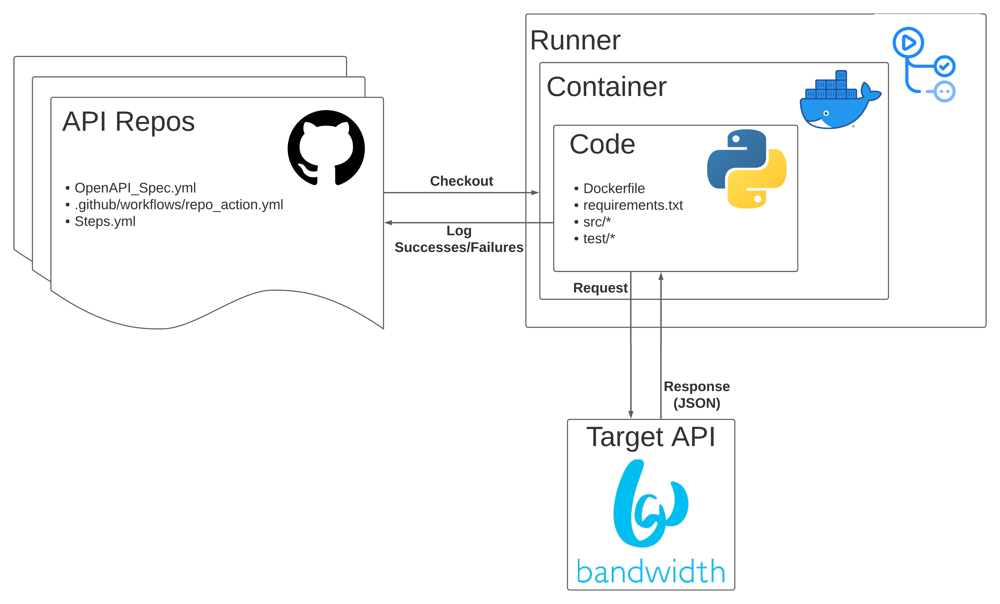
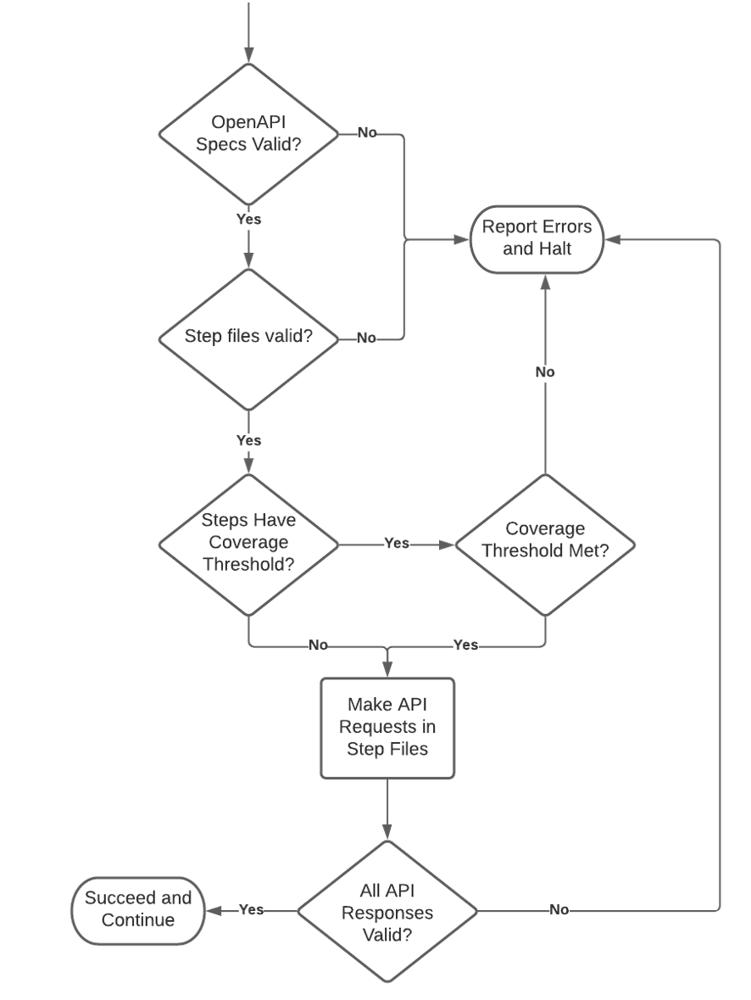
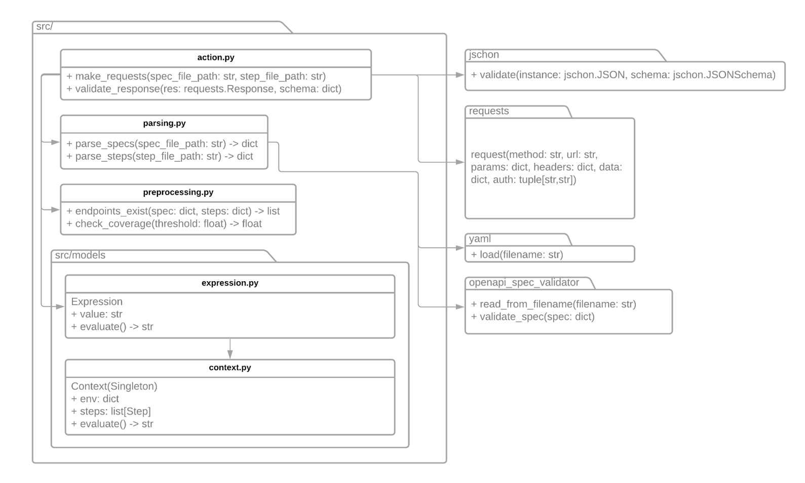

High Level Architecture
Below is a diagram of our high level architecture that describes how our action is used and run.
A client API contains three special files:
- OpenAPI Specification File — This is a JSON or YAML file that complies with the OpenAPI specification. It describes the endpoints of API. For each endpoint, it describes the structure of the allowed inputs and expected responses of each endpoint. The full documentation for OpenAPI specifications is available at OpenAPI.
- Step File — This is a JSON or YAML file that describes how our action should test the API endpoints. Step files allow one to specify a series of requests, each called a "step", in testing one endpoint. The structure of this file is described in How To Write a Step File.
- GitHub Action Workflow — This is a YAML file that describes a job to be run by GitHub. The format of this file is described by GitHub Actions Quickstart. This file should reference our action and provide any necessary parameters, as described in the User's Guide.
Our action runs inside a Docker container on a Linux x64 GitHub Action runner. Our action check out the client repo. It then runs some checks on the client's spec and step files. It then sends the requests described in the step file to the target API. Our action then validates the responses it receives against the expected response described in the spec file. Our action will then report the results in logs. For a detailed description of our action's behavior, see the Action Flowchart for a detailed description of how our action behaves.
Action Flowchart
Below is a flowchart that describes in detail the steps our action takes when validating an API using spec and step files.
First, our action will check if the provided OpenAPI spec file is valid, meaning it complies with the OpenAPI specification. If not, then our action will immediately halt and report this error. Second, our action will check if the provided step file is valid according to our schema. If not, then our action will immediately halt and report this error. The next part depends on whether the step file provides a coverage threshold. If so, our action will measure the proportion of endpoints in the spec file that are tested by the step file. If the proportion is lower than the threshold, then our action will immediately halt and report this error, detailing which endpoints are not covered. Next, our action will being sending https requests described in the step file to the target API. For each response our action receives, it will validate it against the expected response described in the spec file. If any response does not match what is expected in the spec file, then our action will halt and report these discrepencies as errors. Otherwise, our action will report that the validation succeeded.
Class Diagram
Below is a class diagram that describes the modules and functions in our action.
Here we'll describe what each of listed libraries (right) does. For a detailed description of every module and function, see our documentation.
- Jschon — This library allows us to validate if a given JSON instance is valid against a given JSON schema. We use this when checking if a step file is valid. We use then when checking if API responses match the schema provided in the spec file.
- Requests — This library allows us to make HTTP requests. We use this library when sending requests described in the step file.
- PyYAML — This library allows us to parse YAML files. We use this library when parsing the spec file and step file.
- OpenAPI Spec Validator — This library allows us to determine if a given YAML or JSON file is a valid instance of an OpenAPI specification. We use the library to validate the spec file.